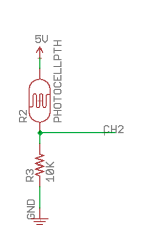
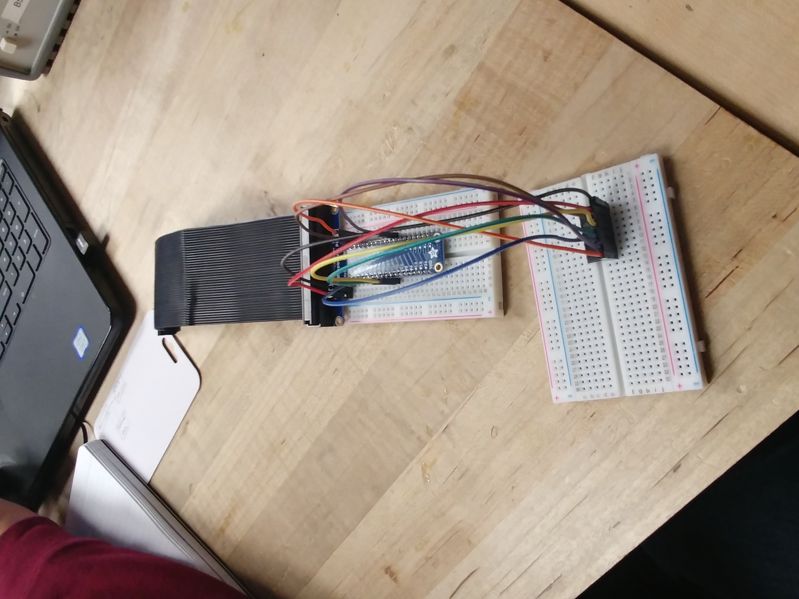

Step 1
- To begin work with the photocell, we had to first setup the MCP3008 (as pictured)
- We followed the instructions provided, and had the MCP setup in no time
Step 2
- With the MCP connected, we then setup the photocell's circuit.
- Once connected, we ran some tests, and found that the values we were outputting were acceptable, the pi told us we were reading anywhere from 254 to 1023 on output
- We measured the actual resistance with an ohmmeter to find R3 reading 9.9kOhms (as it should), and the photocell reading 1.7kOhms in ambient light and 100kOhms in darkness.
- With our input values and resistor values, we were able to find Vout varying from 1.67v to 2.78v approximately.
- With the voltage range, the MCP will likely output from 1.67v to 2.78v.
Step 3
- Once we actually ran simpletest.py, we were able to see that the values outputted were wrong.
After some investigation, we found that this was due to the input voltage of 5v being too high for the MCP.
- To fix this, we simply switched the input voltage to 3.3V, which made our new output readings range from 1.09v to 1.83v.
Section Conclusion
Although it took some time to get our photocell circuit working, we were able to manage it eventually. We faced a lot of problems wih getting the Pi to work properly (it turns out copying and pasting code from lecture slides isn't a good idea), and with designing our circuit, but with some help from the TA's we were able to figure out what we were doing wrong in not time.
Programming and using the photocell will help us in future labs because it felt like a full-stack project. We started with all the elements we needed to complete the project, but it took time to fit everything together. The process of going from Raspberry Pi to voltage-divided light-sensor was a new experience for all of us, and we definitely used all the information we could glean from this section on the rest of the project.